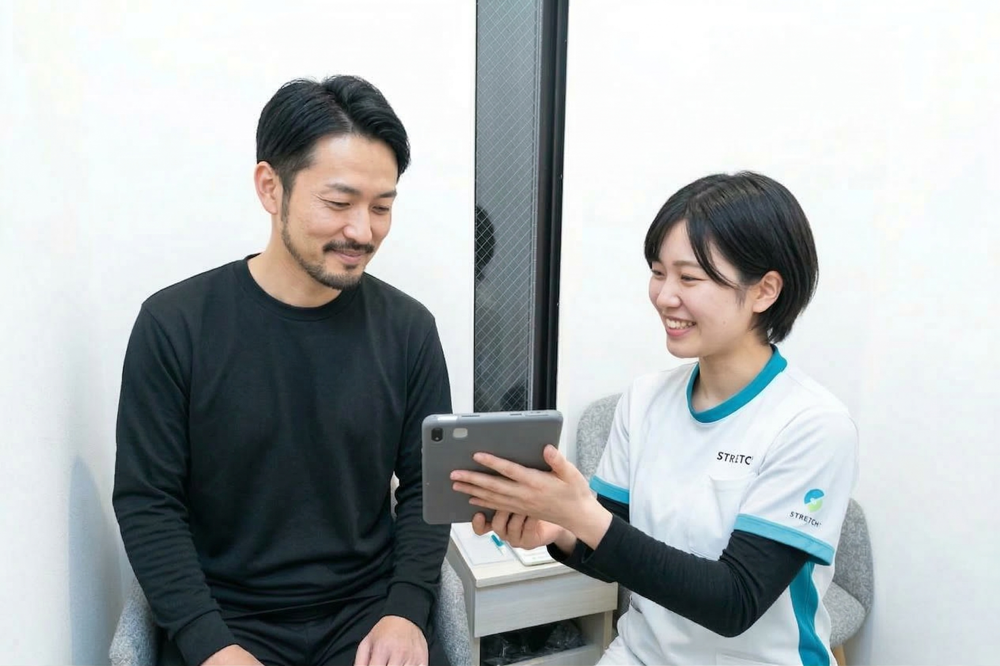
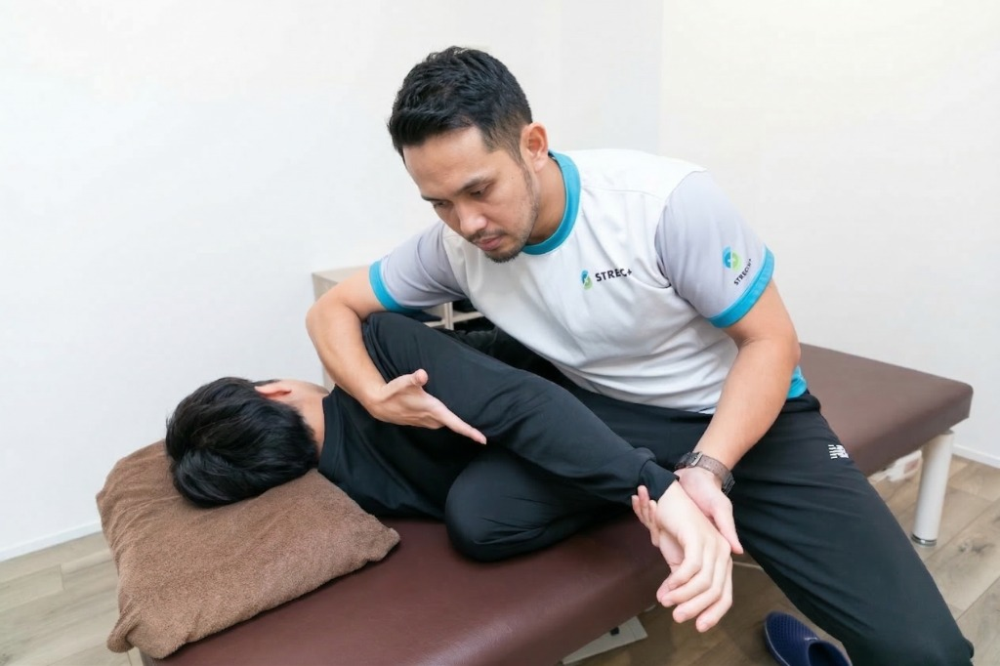
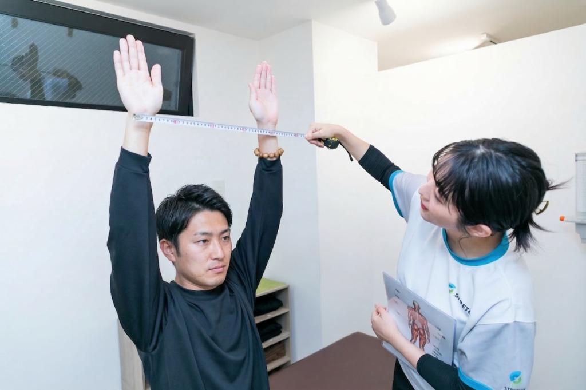
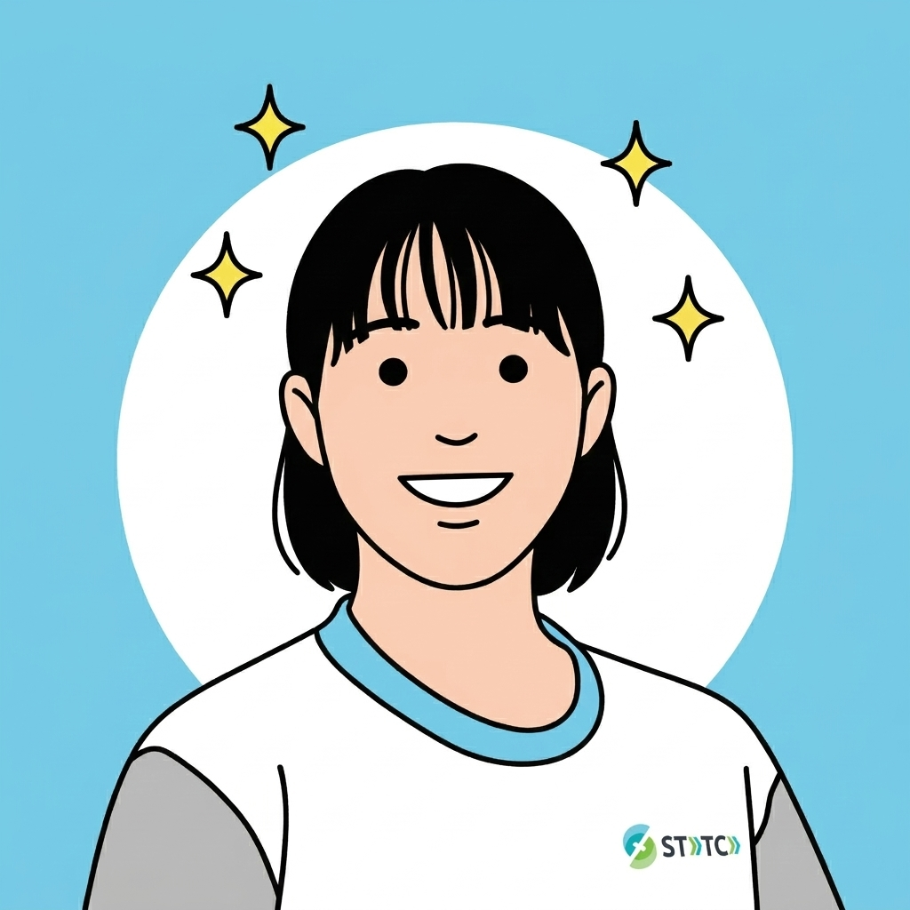
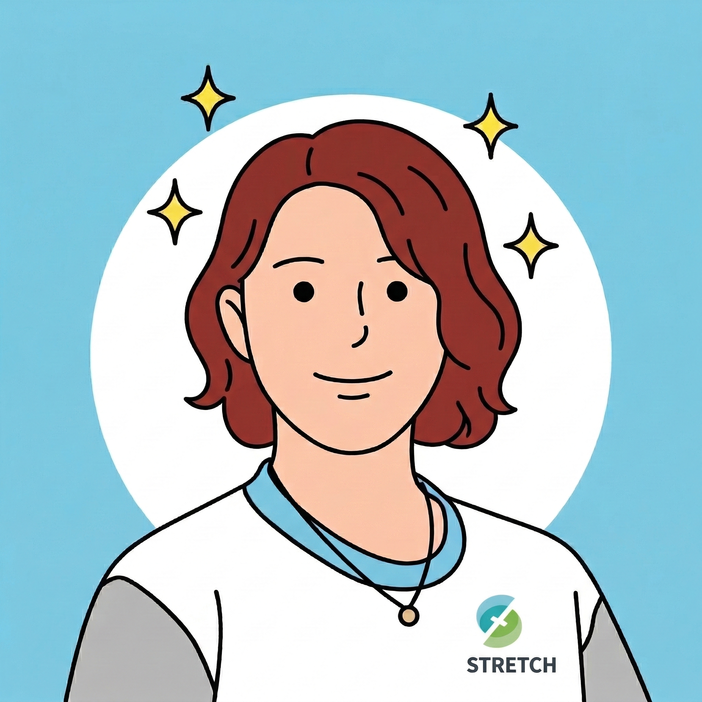
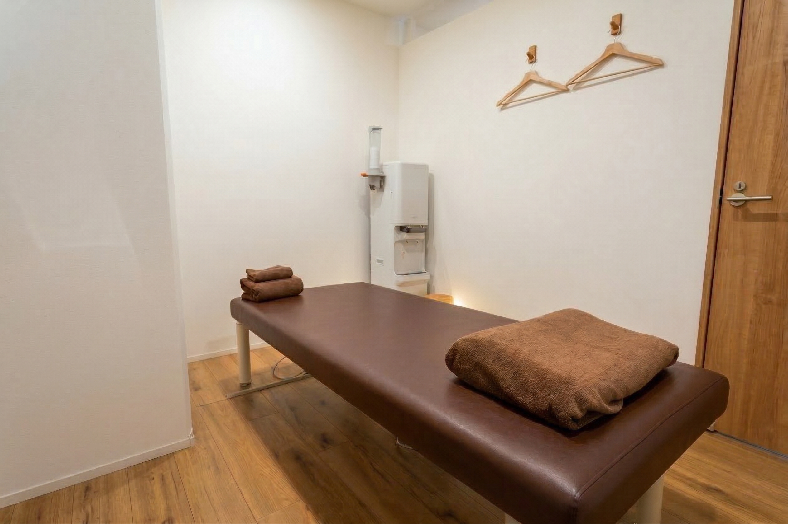

パーソナルストレッチは、専門知識を持つスタッフが、お客様一人ひとりの身体の状態に合わせて行うマンツーマンのストレッチです。
決まった流れをそのまま行うのではなく、硬さが出ている部位、動かしにくい関節、姿勢のくせなどを見ながら、その方に合った形で施術を組み立てていきます。

身体の硬さやつらさの出方は、人によって違います。
同じ肩こりや腰の張りでも、原因が姿勢にある方もいれば、股関節や背中の硬さが影響している方もいます。
そのため、ただ決まった場所を伸ばすだけではなく、「どこが硬いのか」「どこが動きにくいのか」「どの順番で整えるべきか」を見ながら、その方に合わせて施術することが大切です。
パーソナルストレッチは、こうした身体の違いに合わせて、必要な部位に必要なアプローチができるのが特長です。
一人では伸ばしきれない部分まで、無理のない範囲でしっかり伸ばせるため、セルフストレッチでは届きにくいところにもアプローチしやすくなります。

マッサージやもみほぐしは、疲れている部分を押したりゆるめたりして、つらさを和らげるケアです。
一方で、パーソナルストレッチは、関節を動かしながら筋肉を伸ばし、身体全体の動きやバランスを整えていくのが特長です。
一点を押してほぐすというより、筋肉や関節まわりを広く動かしながら整えていくため、部分的な気持ちよさだけでなく、動きやすさや姿勢の変化まで目指しやすい施術です。

ストレッチplusには、肩こりや腰の張りのようなはっきりした不調だけでなく、
「なんとなく体が重い」「もっと自分の体を使いやすくしたい」といったご要望をきっかけに
来店される方も多くいらっしゃいます。
運動やゴルフのパフォーマンス向上を目的とした方には、専用コースのご用意もあります
★★★★★
建物はとても綺麗で新しく清潔感があり、入った瞬間から安心感がありました。
担当の方の説明が丁寧でわかりやすく、施術中も痛くないか要所要所で確認してくれるので、リラックスして受けられました。
会話もフランクで、いろいろな話題を振ってくれるため60分があっという間でした。希望に沿ったストレッチをしてくれる点も嬉しかったです。
★★★★★
身体をどのような状態にして維持したいか希望を聞いてくれて、それに沿った施術と日常動作のアドバイスをしてくれます。
整体やマッサージ、鍼灸院などいろいろ行きましたが、こちらは本当におすすめです。
★★★★★
痛気持ちいいくらいで、しっかり変化を実感。
腰まわりが気になっていたため、下半身を中心にケアしてもらいました。
原因の説明やセルフケアの方法も教えてもらえて大満足です。
★★★★★
整体やマッサージよりも断然、効果を感じられました。
ストレッチは初めてでしたが、とても良かったです。
寒い日だったので温かくしてあるベッドも最高でした。
★★★★★
可動域がかなり広がったのを実感しました！
普段トレーニングをしているので体の硬さが気になっていましたが、状態を見ながら的確にほぐしていただき、自分では伸ばしにくい部分まで丁寧にアプローチしてもらえて、とても満足です。
★★★★★
丁寧な説明とフランクな会話で、あっという間の60分でした。
建物はきれいで清潔感があり、入った瞬間から安心感がありました。
施術中も痛くないか確認してくれるので、リラックスして希望に沿ったストレッチを受けられました。
★★★★★
日常動作のアドバイスまでしてくれる、本当におすすめのサロンです。
身体をどのような状態にして維持したいか希望を聞いてくれて、それに沿った施術をしてくれます。
いろいろ行きましたが、こちらは大満足です。
★★★★★
痛気持ちいいくらいで、しっかり変化を実感。
腰まわりが気になっていたため、下半身を中心にケアしてもらいました。
原因の説明やセルフケアの方法も教えてもらえて大満足です。
初回限定価格 60分 3,980円（税込）

人目を気にせず、リラックスして施術を受けていただけるプライベート空間をご用意しています。
無料のお着替えやウォーターサーバーを完備。
手ぶらでお気軽にご来店いただけます。
初回ご来店時の流れを、写真付きでご紹介します。

お体の状態について、ヒアリングとチェックを行います。
その内容をもとに、当日の施術方針や目指したい状態をすり合わせます。

トレーナーがマンツーマンでストレッチを行います。
ご自身で頑張って動かす必要はなく、リラックスして体を預けていただけます。

施術後のお体の状態を確認し、施術前との違いを一緒に見ていきます。
必要に応じて、ご自宅でも取り入れやすいセルフストレッチをご案内します。
初回限定価格 60分 3,980円（税込）
通い続けたくなるストレッチ店であるために、皆様にお約束することをお伝えします。
肩の重さや腰の張り、小さな違和感を見逃しません。
つらさが大きくなる前に状態を把握し、事前のケアでしっかりと整えることを徹底しています。
一時的なスッキリ感だけで終わらせません。
姿勢や体の使い方まで見直し、日常生活に戻った後も疲れがたまりにくい身体づくりを目指します。
腕の上がり方や首の回り方など、具体的な違いを確認します。
施術の前後で前かがみのしやすさなどを一緒にチェックし、ご自身の体の変化をわかりやすくお伝えします。
無理なく継続できることが、一番大切だと考えています。
今の体の状態や普段の生活リズムをしっかり踏まえたうえで、最適なメニューや通い方をご提案します。
「また来たい」と思っていただける体験を提供します。
清潔で落ち着いたプライベート空間と、満足度の高い丁寧な施術を通じて、心身ともにリラックスできる時間をお約束します。

業界歴8年
業界歴8年・ヘッドスパ歴5年の経験を活かし、お客様に寄り添った丁寧なヒアリングと、しっかり効かせる施術を大切にしています。忙しい毎日のリセットになるような時間を目指しています。趣味はラグビー観戦と自然めぐりです。
指名して予約
業界歴8年
女性整体院やフットセラピーでの勤務経験もあり、年代を問わず一人ひとりに合ったケアを大切にしています。肩・腰・足のお悩みや、女性特有のお悩みもお気軽にご相談ください。バスケ観戦とパン屋めぐりが好きです。
指名して予約
業界歴5年
ストレッチトレーナーとして活動しながら、理学療法士資格の取得に向けて日々学びを深めています。姿勢改善や関節のお悩み、パフォーマンス向上まで幅広くサポート。海や野球観戦が好きで、子育てにも全力です。
指名して予約
業界歴1年
スポーツ経験を活かし、競技にも日常にもつながる身体づくりを大切にしています。理学療法を学びながら、肩甲骨や胸郭まわりの動きを整え、上半身の可動域改善やパフォーマンス向上をサポートします。
指名して予約
| 店名 | ストレッチplus |
|---|---|
| 住所 |
〒103-0025 東京都中央区日本橋茅場町2-13-14 ブイワンビル2F
|
| 電話番号 | 080-7137-9086 |
| 営業時間 | 10:00〜22:00 |
| アクセス | 東京メトロ茅場町駅3番出口より徒歩1分 |

出口を出たら左手の宝くじ売り場を背にして、進行方向と逆側へお進みください。

信号は渡らず、左側の歩道をまっすぐ進んでください。

階段またはエレベーターで2階までお越しください。
初めての方からよくいただくご質問をまとめました。
準備・予約・施術・プランごとにご覧いただけます。
特にございません。無料のお着換えやウォーターサーバーをご用意しておりますので、お気軽にご来店ください。
※
サブスクリプションプランでご登録いただく場合、デビットカード/クレジットカード情報が必要となりますので、ご用意ください。
徒歩1~2分程度の場所に、2か所ほどコインパーキングがございます。また、お店の前に、2台分のパーキングメーター（60分まで）もございます。
スタッフがお客様の健康状態や体の制約を考慮して、最適な来店頻度をご案内いたします。
特に制限はありません。様々な層のお客様に対して、経験豊富なスタッフが最適なストレッチをご提案いたします。
症状に依りますので、主治医とご相談のうえ、ご来店ください。
妊娠している場合は施術を受けられません。ご了承ください。
ページ下部の「LINEでご予約」ボタン、もしくは、ページ上部（スマホの場合はページ下部）の「Webでご予約」ボタンから、ご予約できます。また、ホットペッパービューティー経由のご予約、現地でのご予約も受け付けております。
指名可能です。指名出来るスタッフは、出勤状況や予約状況によって変わりますので、ご予約の際にご確認ください。
当日予約は可能ですが、ご希望のお時間で予約出来ない場合がございますので、早めのご予約をおすすめしております。
可能です。予約内容のキャンセルや変更は、出来る限り前日の営業時間内までにお願いいたします。
問題ありません。スポーツのパフォーマンス向上のために当店に通っていただいているお客様も多数いらっしゃいますが、ほとんどのお客様が肩や腰など、ご自身の体の一部に違和感や不安を持っておられるお客様です。
一般的なストレッチでは同じ動作を繰り返すことが多いですが、パーソナルストレッチではプロのスタッフがお客様ごとにストレッチをカスタマイズし、最適な効果を追求します。
体の柔軟性を向上させたい方、筋肉の緊張を和らげたい方、姿勢を改善したい方など、健康とストレッチに関心のあるすべての方におすすめです。また、特定の運動目標を持つ方にも効果的です。
会員制では無いため、入会手続や退会手続はございません。ただし、サブスクリプションプランに加入いただく場合は、デビット/クレジットカード情報が必要です。
60分以上のコースをおすすめしております。初回のストレッチでは、関節の動きなどをしっかりと確認したうえで、最適なコースをご提案させていただきます。
ご要望に合わせて柔軟に対応いたしますので、LINE、もしくは、ヘッダーの「法人向け」ページよりご相談ください。
公式LINEはこちら